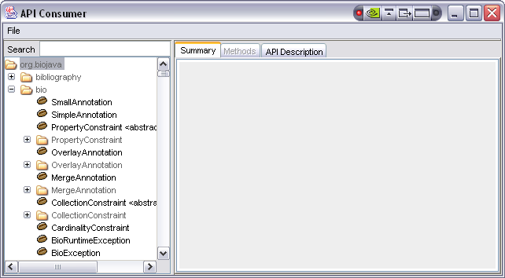
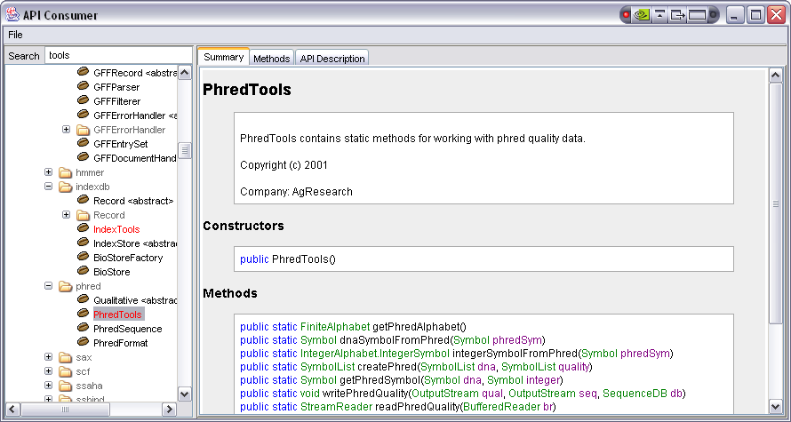
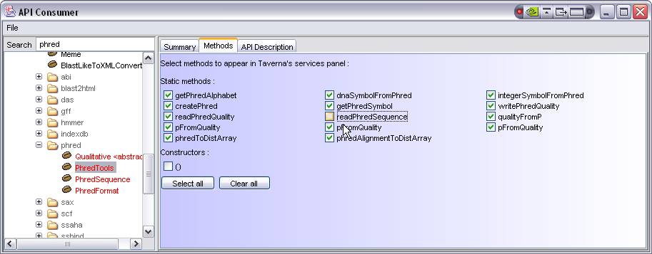
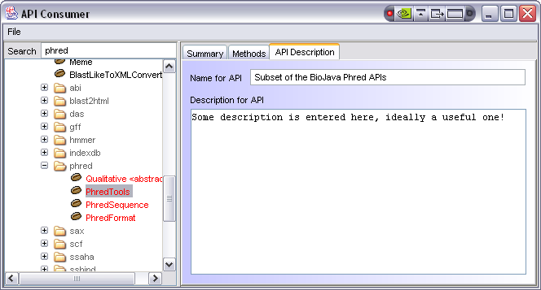

The API Consumer Tool allows the selection of subsets of Java APIs which may then be imported into Taverna Workbench and used as services in workflows. This tool is intended for API developers rather than end-users. It produces an XML API definition file which Taverna imports - this is file that you distribute alongside your API to 'Taverna enable' it.
The API Consumer Tool is a Java Doclet and uses Ant to launch; you must therefore have Java and Ant installed and available on the path. The Tool has been tested on Java 1.6; use other versions at your own risk.
Before running the API Consumer Tool you need to place source files of your API within the 'target' directory and any supporting libraries (i.e. dependencies) required in the 'lib' directory. This is particularly important - if your API includes methods which consume or return a type that is not available to the API Consumer Tool, the definitions it generates will be invalid. For example, if your API contains a method "void foo(MagicClass bar)" and the MagicClass is in some random package in a third party jar file that you have not included there is no way for the Doclet to know the fully qualified classname of MagicClass. As Taverna requires full classnames, this will result in an API that cannot be invoked from workflows. You can normally trap these issues by watching for the standard Javadoc warning messages in the console.
Once your source and any supporting files are present as described above, from the API Consumer Tool directory you can either run the "runme.bat"/"runme.sh" script or call Ant directly (just type 'ant' on the command line). The API Consumer Tool itself will be built from source and applied to the target source files of your API. After some slight delay for this process (longer for very complex APIs) you should see a screen such as the following:

The tree on the left hand side of the window shows the available classes (including inner classes where present) along with a search box - the right hand side currently shows nothing. Selecting a class from the tree produces a display like the following, this should be clearly similar to the information produced by the standard Javadoc tool:

In the case of large APIs the search box can be used to display a subset of the complete class tree - enter a pattern to match and hit return in this text box and the tree will be expanded to show all matching nodes. To return to the view with all nodes expanded clear the text in this box and hit return.
The next step is to select methods to add to the API definition - these methods (static, instance or constructors) will appear as services within Taverna Workbench's Service Panel when the definition file is imported.
Methods can be manually added by choosing the class, opening the "Methods" tab and either selecting individual methods or using the "Select all" and "Clear all" boxes:

For APIs under your direct control there is an alternative based on JavaDoc tags. By adding the tag "@taverna.consume" to either classes or individual methods you can automatically have these methods selected in the API consumer when it first scans the source files. In the case of the tag at a class or interface level all constructors and methods will be selected.
To aid use of your exported API you can select the "API Description" tab and use it to provide a name and description for the entire API subset:

To save the API definition select the "File" -> "Save as XML". This should bring up a standard save dialogue, choose a filename and save. This is the file that is then imported into Taverna Workbench's Service Panel by selecting "Import new services" -> "API Consumer...".